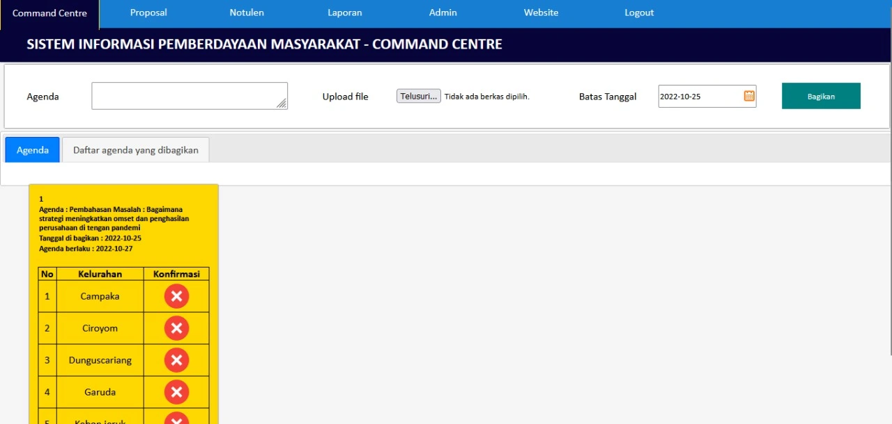
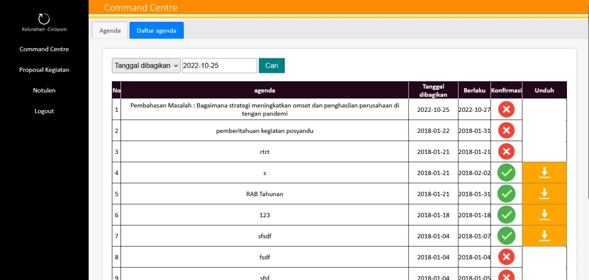

website command center untuk informasi pemberdayaan masyarakat pada kecamatan.
Terdapat sisi admin kecamatan dan multi daftar user desa, (bisa diseusuaikan!).

Admin Kecamatan
user : andir
Password : 123123

Admin desa
user : campaka
Password : 123123
user : ciroyom
Password : 123123
user : dunguscariang
Password : 123123
user : garuda
Password : 123123
user : kebonjeruk
Password : 123123
user : maleber
Password : 123123
Demo : Klik disini
Fitur unggulan:
- Agenda kecamatan broadcast untuk daftar desa
- Pengajuan Proposal
- Berita/pengumuman
- Company Profile
- Notulen
Bahan pembuatan
- HTML sebagai kerangka
- PHP sebagai bahasa program
- CSS sebagai pemanis dan layout
- Javascript dan Jquery sebagai interaksi langsung
- MYSQL sebagai database
- Bootstrap 3
- tinymce